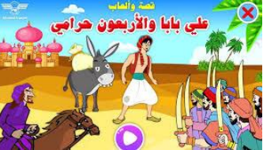
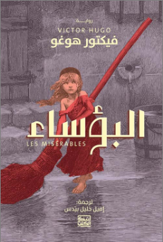

| رمز الكتاب ISBN | العنوان | السعر | التفاصيل | اختيار |
|---|---|---|---|---|
| 978-9770916738 | ألف ليلة وليلة | 25000 ل.س | ||
|
الناشر: دار المعارف أهم القصص:
علاء الدين والمصباح السحري
علي بابا والأربعون لصًا

رحلات السندباد البحري
|
||||
| 978-9953891718 | موسم الهجرة إلى الشمال | 12000 ل.س | ||

الناشر: دار العين للنشر |
||||
| 978-9953451080 | الخبز الحافي | 10000 ل.س | ||

الناشر: دار الساقي للطباعة |
||||
| 978-9953891790 | الرياضيات و فلسفتها عند العرب | 40000 ل.س | ||

الناشر: مؤسسة هنداوي |
||||
| 978-9776263253 | كتاب روعة الكيمياء | 30000 ل.س | ||

الناشر: مؤسسة هنداوي |
||||
| 9789960556123 | كتاب علم الأحياء الدقيقة | 30000 ل.س | ||

الناشر: مؤسسة هنداوي |
||||
| 9789776960596 | البؤساء | 60000 ل.س | ||
|

الناشر: دار العلم للملايين |
||||